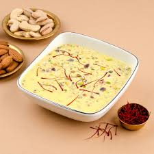
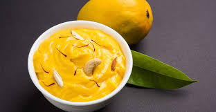
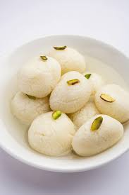
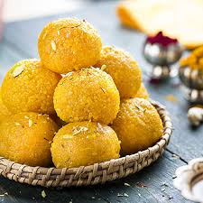

| Product Name | Product Image | price | Description | Availability |
|---|---|---|---|---|
| Basundi |  | 400.00 | Basundi is a rich, creamy Indian dessert made by simmering milk with sugar, cardamom, and saffron. | In stock |
| Shrikhand |  | 600.00 | Shrikhand is a creamy, sweet Indian dessert made from strained yogurt, flavored with saffron, cardamom, and garnished with nuts. | |
| Rasgulla |  | 700.00 | Rasgulla is a soft, spongy Indian sweet made from fresh cheese balls cooked in light sugar syrup. | Out of stock |
| Laddu |  | 650.00 | Treat yourself to the deliciousness of our premium Nice Laddu! Made with the finest ingredients and crafted with care, these soft and juicy delights ... |